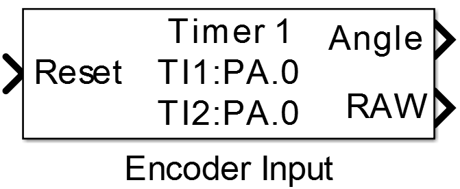
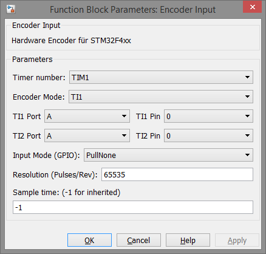

Encoder Input
Block enables the use of STM32’s hardware encoder circuitry.
Library
Targets/STM/DISCO_F407VG
Description
{kind=link}
This block uses the hardware timers of an STM32 MCU for decoding position information from quadrature encoders. In order to get a proper functioning configuration one has to study the data sheet and/or reference manual of the appropriate MCU to get the right combination of timer peripheral and pin numbers. This Block can be configured in different modes for counting the pulses of the connected encoder. So there is a true quadrature encoder mode that uses rising and falling edges of both encoder channels and the second mode which uses both edges of only one channel.
Data Type Support
The block’s reset input port expects a uint8 integer value which is either zero in normal operation or none zero for resetting the internal counter value of the timer register.
The first output port provides the actual angle as a single value in degrees and the second output port provides the actual counter value as an int32 integer value.
Parameters and Dialog Box
Timer number
Number of the actual hardware timer peripheral in the MCU, e.g. choosing TIM1 uses Timer 1 of an STM32 MCU and configures it for decoding quadrature input signals on the timer’s channels CH1 and CH2.
Encoder Mode
There are three different encoder modes which can be configured: * TI1: uses only the signal edges on timer input channel CH1 for counting * TI2: uses only the signal edges on timer input channel CH2 for counting * TI1 and TI2: uses signal edges on both channels for counting
Note
In each mode rising and falling edges of the selected channel are used for counting.
TIx Port
Selection of the GPIO port where the timer input channels are mapped to.
TIx Pin
Selection of the GPIO pin number where the timer input channels are mapped to.
Attention
The TIx Port and Pin numbers have to match the selected Timer number as referenced in the MCU’s data sheet. If the configuration is not correct the model will be generated and compiled without errors but the encoder does not work.
Input Mode (GPIO)
Select the input mode for both of the selected timer input channels, possible values are: * PullNone: no pull up or pull down resistors are configured for the input pins * PullUp: internal pull up resistors are configured for both input pins * PullDown: internal pull down resistors are configured for both input pins
Resolution (Pulses/Rev)
Configuration of the counter value for one revolution of the encoder shaft. The resolution value is the actual maximum value of the counter register, so it depends on the selected Encoder Mode, e.g. if the used encoder has a resolution of 1000 pulses/rev and for Encoder Mode TIx is selected the Resolution value is 2000 pulses/rev since both edges are used. If mode TI1 and TI2 is selected the Resolution value is 4000 pulses/rev. Valid values for the resolution are 0 - 65535 since 16 bit timer peripheral are implemented in the MCU.